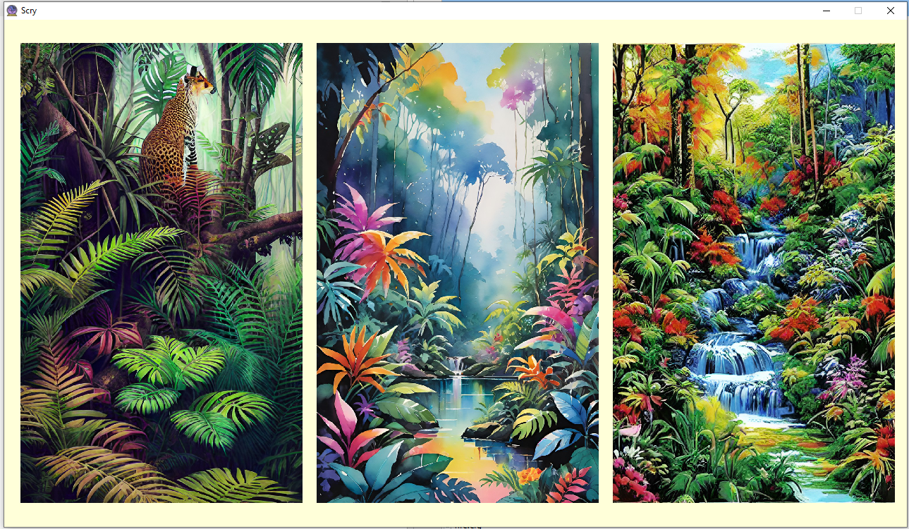
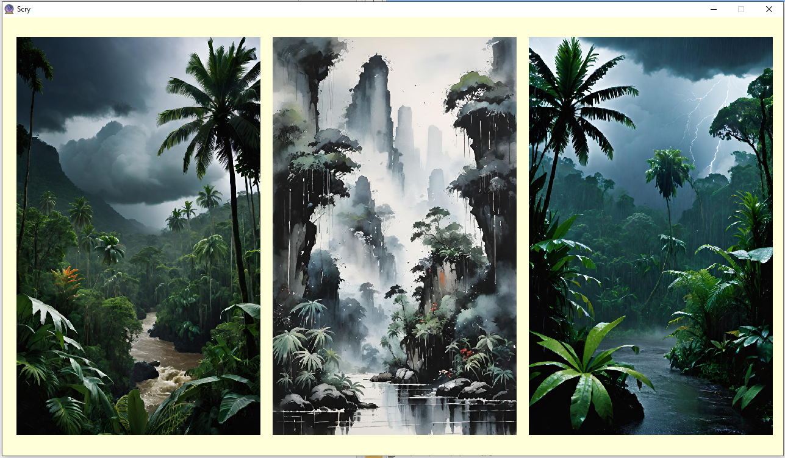
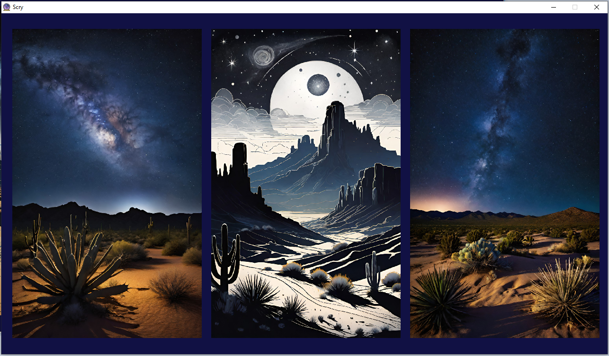

Not a word I heard could I relate; the story was quite clear.
This page is a small overview. Click here for the nitty gritty.
I used Wombo Dream AI to generate all images, but you can create your own for Scry to use. Three images are displayed three at a time, and are periodically and randomly replaced. Most of the environments I have images for have day/night * calm/stormy variations. Some example screenshots:
Jungle, daytime, calm:
Jungle, daytime, raining:
Desert, nighttime, calm:
Youtube Studio: Left pane, "More from Youtube" section, "Youtube studio", (new page) "Audio Library"